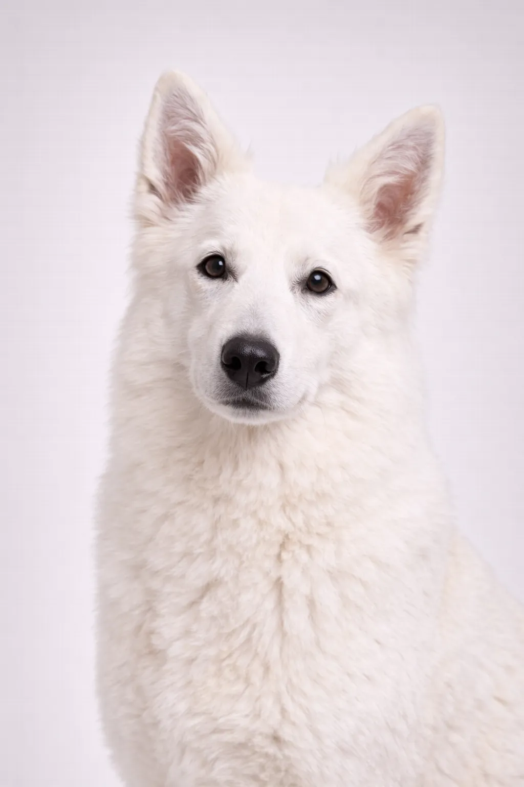

White Swiss Shepherd
With its gentle, intelligent nature, the White Swiss Shepherd is a beloved breed for good reason.
22-26 in
55-88 lbs
Breed Ratings
Temperament
Gentler and less intense than German Shepherds. Loyal, intelligent, eager to please.
🏥 Health
Prone to hip dysplasia and some digestive issues. Generally healthy.
🏃 Exercise
High energy requiring daily exercise and mental stimulation.
Overview
A white variant developed from German Shepherds, the White Swiss Shepherd is gentle, intelligent, and eager to please. They're wonderful family dogs.
Temperament
The White Swiss Shepherd is known for being gentle, intelligent, loyal. They're excellent with children and make wonderful family pets. Their intelligence and eagerness to please make training enjoyable. Early socialization helps them develop into well-rounded companions.
Health
Generally healthy with a lifespan of 12-14 years. Common concerns include hip dysplasia and bloat. Regular veterinary checkups and preventive care are important. Maintaining a healthy weight helps prevent many health issues.
Exercise
High energy breed requiring vigorous daily exercise—at least an hour of activity. They thrive with active families who enjoy outdoor activities. Mental stimulation through training and puzzle toys is equally important. Without adequate exercise, they may develop behavioral issues.
⦿ Is This Breed Right for You?
✓ Best For
- Families
- Active owners
- Those wanting a loyal companion
✗ Not Ideal For
- Those who dislike shedding
- Very hot climates
Our Verdict: A white variant developed from German Shepherds, the White Swiss Shepherd is gentle, intelligent, and eager to please. They're wonderful family dogs.